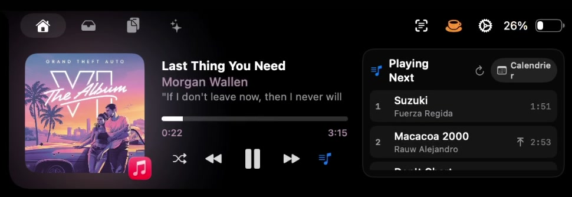
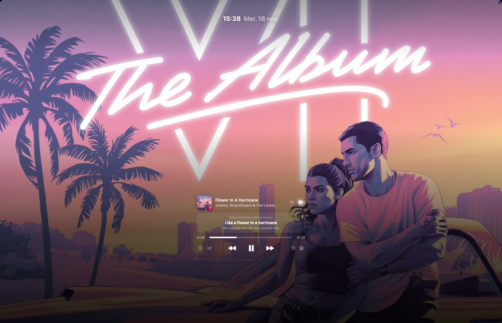
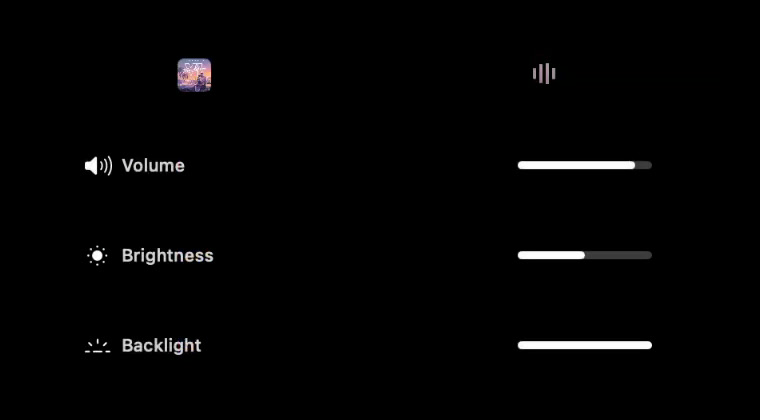

Bien démarrer
GravityNotch tourne sur macOS 14 Sonoma ou plus récent, sur Apple Silicon comme sur Intel. Pas besoin d'encoche : sur un écran qui n'en a pas, une île virtuelle s'affiche en haut de l'écran.
Installer
- Téléchargez
GravityNotch.dmg, ouvrez-le et glissez l'app dans Applications. - Lancez-la une fois. macOS la bloque, c'est normal : l'app est gratuite et n'est pas signée avec un certificat Apple payant. Fermez l'alerte.
- Ouvrez Réglages Système › Confidentialité et sécurité, descendez tout en bas et cliquez sur Ouvrir quand même.
Avec Homebrew, une seule commande suffit, puis les étapes 2 et 3 :
brew install --cask adrielakak/tap/gravitynotchSi Ouvrir quand même n'apparaît pas, lancez xattr -cr /Applications/GravityNotch.app dans le Terminal, puis rouvrez l'app.
Les autorisations, une par une
Au premier lancement, un assistant vous les propose. Toutes sont facultatives : si vous en refusez une, seule la fonction qui en dépend reste éteinte.
Mises à jour
GravityNotch vérifie les nouvelles versions toutes les heures. Quand une mise à jour est téléchargée, l'encoche affiche « GravityNotch est prêt » : un clic redémarre l'app sur la nouvelle version. Avec Homebrew, brew upgrade --cask gravitynotch fait la même chose.
GravityNotch runs on macOS 14 Sonoma or later, on Apple Silicon and Intel. No notch needed: on a display without one, a virtual island shows at the top of the screen.
Install
- Download
GravityNotch.dmg, open it and drag the app into Applications. - Launch it once. macOS blocks it, which is expected: the app is free and not signed with a paid Apple certificate. Dismiss the alert.
- Open System Settings › Privacy & Security, scroll all the way down and click Open Anyway.
With Homebrew, one command does it, then steps 2 and 3:
brew install --cask adrielakak/tap/gravitynotchIf Open Anyway does not show up, run xattr -cr /Applications/GravityNotch.app in Terminal and open the app again.
Permissions, one by one
A startup guide offers them on first launch. All of them are optional: refuse one and only the feature that needs it stays off.
Updates
GravityNotch checks for new versions every hour. Once an update is downloaded, the notch says "GravityNotch is ready": one click restarts the app on the new version. With Homebrew, brew upgrade --cask gravitynotch does the same.
L'encoche
Fermée, l'encoche montre ce qui se passe : la musique en cours, un HUD, un agent qui travaille. Ouverte, elle devient un petit centre de contrôle.
Ouvrir et fermer
- Survolez l'encoche (Réglages › Général › Ouvrir l'encoche au survol) ou cliquez dessus.
- Au trackpad, glissez deux doigts vers le bas sur l'encoche pour l'ouvrir, vers le haut pour la fermer.
- Au clavier : ⇧⌘I. L'aperçu rapide (sneak peek) : ⇧⌘H. Les deux se changent dans Réglages › Raccourcis.
Les onglets
- Home : le lecteur, le calendrier et le miroir.
- Shelf : les fichiers que vous y déposez.
- Clips : l'historique du presse-papiers.
- Agents : vos agents IA en direct.
Choisissez ceux qui s'affichent dans Réglages › Apparence › Onglets de l'encoche.
L'en-tête
En haut de l'encoche ouverte : la capture de texte (clic droit pour plus d'options), Caféine, le minuteur et les réglages. Caféine et le minuteur se masquent dans Réglages › Apparence.
Plusieurs écrans
Dans Réglages › Général, affichez l'encoche sur tous les écrans, ou laissez-la suivre l'écran que vous utilisez.
Closed, the notch shows what is going on: what's playing, a HUD, an agent at work. Open, it becomes a small control center.
Open and close
- Hover the notch (Settings › General › Open notch on hover) or click it.
- On a trackpad, swipe down with two fingers on the notch to open it, up to close it.
- From the keyboard: ⇧⌘I. The sneak peek: ⇧⌘H. Change both in Settings › Shortcuts.
Tabs
- Home: the player, the calendar and the mirror.
- Shelf: the files you drop in.
- Clips: your clipboard history.
- Agents: your AI agents, live.
Pick the ones you want in Settings › Appearance › Notch Tabs.
The header
At the top of the open notch: text capture (right-click for more), Caffeine, the timer and settings. Caffeine and the timer can be hidden in Settings › Appearance.
Several displays
In Settings › General, show the notch on every display, or let it follow the one you are using.
Musique
Le lecteur suit ce que vous écoutez, avec la pochette, la progression et vos commandes préférées. Fermée, l'encoche garde la pochette et un petit visualiseur.

Choisir la source
Dans Réglages › Média › Source du média :
Vos commandes
Dans Réglages › Média › Contrôles des médias, glissez jusqu'à 6 commandes sur les emplacements : aléatoire, précédent, lecture, suivant, répétition, volume, favori, sortie audio, À suivre, Reculer de 15 s et Avancer de 15 s.
À suivre
La file d'attente des prochains morceaux. Avec Apple Music, la lecture automatique n'est lisible que si la file d'attente est affichée dans l'app Musique : macOS ne la donne pas autrement.
Gestes et aperçus
Glissez horizontalement sur l'encoche pour changer de morceau, et recevez un aperçu rapide à chaque changement de lecture. Les deux se règlent dans Réglages › Général.
Couleurs
Le lecteur peut prendre la teinte de la pochette, avec un halo lumineux autour d'elle. À régler dans Réglages › Média et Réglages › Apparence.
The player follows what you listen to, with the cover, the progress and your favorite controls. Closed, the notch keeps the cover and a small visualizer.
Pick the source
In Settings › Media › Media Source:
Your controls
In Settings › Media › Media controls, drag up to 6 controls onto the slots: shuffle, previous, play, next, repeat, volume, favorite, audio output, Playing Next, Backward 15s and Forward 15s.
Playing Next
The queue of upcoming tracks. With Apple Music, Autoplay can only be read while the queue is shown in the Music app: macOS does not expose it otherwise.
Gestures and previews
Swipe sideways on the notch to change tracks, and get a quick preview whenever playback changes. Both live in Settings › General.
Colors
The player can take the tint of the cover, with a soft glow around it. Set it in Settings › Media and Settings › Appearance.
Paroles
Les paroles synchronisées s'affichent sous le nom de l'artiste et sur l'écran verrouillé. Elles se choisissent dans Réglages › Média › Paroles.
LRCLIB, par défaut
Une bibliothèque de paroles gratuite et open source, pour tout le monde et avec tous les lecteurs. Les lignes sont synchronisées. Quand le morceau existe en version synchronisée au mot, chaque mot s'allume à son vrai moment ; sinon, le rythme des mots est estimé.
Pour éviter les mauvaises paroles, GravityNotch vérifie le titre et la durée du morceau (à 4 secondes près).
Apple Music, au timing exact
Les paroles de l'app Musique, syllabe par syllabe. Il faut un abonnement Apple Music et une connexion unique à votre compte Apple depuis les réglages.
Cette source passe par le lecteur web d'Apple Music, pas par une API officielle : si Apple la modifie, LRCLIB prend le relais automatiquement.
Pendant une pause instrumentale de plus de 5 secondes, trois points patientent à la place des paroles.
Synced lyrics show below the artist name and on the lock screen. Pick their source in Settings › Media › Lyrics.
LRCLIB, the default
A free and open source lyrics library, for everyone and with every player. Lines are timed. When the song has a word synced version, each word lights up at its real time; otherwise the words are paced by estimate.
To avoid wrong lyrics, GravityNotch checks the title and the length of the song (within 4 seconds).
Apple Music, exact timing
The lyrics of the Music app, syllable by syllable. It needs an Apple Music subscription and a one-time sign in to your Apple Account from the settings.
This source goes through the Apple Music web player, not an official API: if Apple changes it, LRCLIB takes over on its own.
During an instrumental break longer than 5 seconds, three dots wait in place of the lyrics.
Écran verrouillé
Même Mac verrouillé, la musique reste à portée de main. Activez-le dans Réglages › Média › Lecteur de musique sur l'écran verrouillé.

Deux dispositions
Carte : un lecteur compact avec pochette, commandes et paroles. Plein écran : le lecteur à gauche et les paroles à droite, comme dans Apple Music, mot par mot et en vague.
Seules les paroles synchronisées s'affichent ; un morceau sans paroles synchronisées garde un lecteur simple.
Pochettes animées
Avec Apple Music, quand un album a une pochette animée, elle bouge aussi sur l'écran verrouillé. Elle est préparée dès le début du morceau, et les 20 dernières restent en cache pour s'afficher tout de suite.
Even with your Mac locked, the music stays at hand. Turn it on in Settings › Media › Lock Screen Music Player.
Two layouts
Card: a compact player with cover, controls and lyrics. Full screen: the player on the left and the lyrics on the right, like in Apple Music, word by word, in a wave.
Only synced lyrics are shown; a song without synced lyrics keeps a simple player.
Animated covers
With Apple Music, when an album has an animated cover, it moves on the lock screen too. It is prepared as soon as the song starts, and the last 20 stay cached so they show at once.
HUD et audio

Volume, luminosité, clavier
Les touches de volume, de luminosité et de rétroéclairage affichent leur niveau dans l'encoche au lieu des bulles de macOS. À activer dans Réglages › HUDs › Remplacer le HUD système, avec l'autorisation Accessibilité.
Verr. Maj
Un indicateur discret apparaît dans l'encoche quand le verrouillage des majuscules s'active.
AirPods et Bluetooth
À la connexion, l'encoche montre le modèle et un anneau de batterie, avec le détail gauche, droite et boîtier au survol. Les changements de mode d'écoute s'affichent aussi. À régler dans Réglages › HUDs › AirPods & Bluetooth.
Sortie audio
Passez des haut-parleurs aux AirPods ou à un écran en un clic, depuis la commande du lecteur ou le clic droit sur le bouton de capture.
Sous macOS 27, la bannière « Connectés » d'Apple ne peut plus être masquée par aucune app : elle s'affiche à côté de l'animation de GravityNotch.
Volume, brightness, keyboard
The volume, brightness and keyboard backlight keys show their level in the notch instead of the macOS bubbles. Turn it on in Settings › HUDs › Replace system HUD, with the Accessibility permission.
Caps Lock
A subtle indicator shows in the notch when Caps Lock turns on.
AirPods and Bluetooth
When they connect, the notch shows the model and a battery ring, with the left, right and case detail on hover. Listening mode changes show up too. Set it in Settings › HUDs › AirPods & Bluetooth.
Audio output
Switch from the speakers to AirPods or a display in one click, from the player control or by right-clicking the capture button.
On macOS 27, Apple's "Connected" banner can no longer be hidden by any app: it shows next to the GravityNotch animation.
Outils
Shelf
Déposez un fichier sur l'encoche pour le garder sous la main. Ensuite : extraire le texte (OCR), créer un ZIP, convertir en PNG, supprimer le fond d'une image, ou partager par AirDrop.
Le Partage rapide envoie le fichier sur 0x0.st et vous donne un lien public : n'y mettez rien de privé.
Clips
L'historique du presse-papiers : textes, liens, fichiers et couleurs, avec recherche et épinglage. Les mots de passe copiés depuis un gestionnaire de mots de passe ne sont jamais enregistrés. Gardez l'historique après un redémarrage dans Réglages › Apparence.
Capture de texte
Cliquez sur le bouton de capture de l'en-tête, sélectionnez une zone de l'écran : le texte reconnu est déjà dans le presse-papiers. Clic droit pour capturer une zone ou une fenêtre directement dans le Shelf.
Caféine
Empêchez la mise en veille de 5 minutes à 8 heures avec la réglette, ou sans limite.
Minuteur
Choisissez une durée en glissant la réglette. Le compte à rebours reste dans l'encoche, avec pause et arrêt, et sonne à la fin.
Calendrier, rappels, miroir
L'onglet Home montre vos prochains événements et rappels (choisissez les calendriers dans Réglages › Calendrier), et peut afficher votre caméra comme un miroir.
Shelf
Drop a file on the notch to keep it at hand. Then: extract its text (OCR), make a ZIP, convert to PNG, remove an image's background, or share with AirDrop.
Quick Share uploads the file to 0x0.st and gives you a public link: never put anything private there.
Clips
Your clipboard history: text, links, files and colors, with search and pinning. Passwords copied from a password manager are never saved. Keep the history across restarts in Settings › Appearance.
Text capture
Click the capture button in the header and select an area of the screen: the recognized text is already on your clipboard. Right-click to capture an area or a window straight into the Shelf.
Caffeine
Keep your Mac awake from 5 minutes to 8 hours with the ruler, or with no limit.
Timer
Pick a duration by dragging the ruler. The countdown stays in the notch, with pause and stop, and rings when it's done.
Calendar, reminders, mirror
The Home tab shows your upcoming events and reminders (pick the calendars in Settings › Calendar), and can show your camera as a mirror.
Agents IA
GravityNotch suit Claude Code, Codex CLI et Antigravity (l'app comme l'IDE) pendant qu'ils travaillent, sans que vous ayez à garder leur fenêtre ouverte.
Ce que vous voyez
- Dans l'encoche fermée : un anneau aux couleurs de l'agent tant qu'il travaille, puis une coche verte quand il a fini.
- Dans l'onglet Agents : le projet, l'étape en cours, le contexte utilisé, les outils appelés.
- Le fichier en train d'être modifié, avec sa barre verte et rouge de lignes ajoutées et supprimées.
- Ce que l'agent supprime depuis son terminal (
rm,git rm…), avec une corbeille rouge et le nombre d'éléments.
Quand il a besoin de vous
Une bulle apparaît quand un agent termine ou attend une réponse ; un clic ramène l'app où il tourne. Si un agent s'arrête sur une erreur (plus de crédits, quota atteint), l'anneau s'arrête aussitôt, sans coche verte.
Réglages
Dans Réglages › Apparence › Agents de code : afficher l'onglet Agents, montrer les agents dans l'encoche fermée, la bulle de fin, donner la priorité aux agents quand la musique est en pause, et ouvrir l'onglet Agents automatiquement quand un agent travaille.
Tout se passe en local : GravityNotch lit seulement les journaux que ces outils écrivent déjà sur votre Mac (~/.claude, ~/.codex, ~/.gemini/antigravity). Il ne les modifie pas et n'envoie rien.
GravityNotch follows Claude Code, Codex CLI and Antigravity (both the app and the IDE) while they work, without keeping their window open.
What you see
- In the closed notch: a ring in the agent's colors while it works, then a green check when it's done.
- In the Agents tab: the project, the current step, the context used, the tools called.
- The file being edited, with its green and red bar of added and removed lines.
- What the agent deletes from its terminal (
rm,git rm…), with a red trash can and the number of items.
When it needs you
A bubble shows up when an agent finishes or waits for an answer; one click brings back the app it runs in. If an agent stops on an error (no credits left, quota reached), the ring stops at once, without the green check.
Settings
In Settings › Appearance › Coding Agents: show the Agents tab, show agents in the closed notch, the speech bubble, prioritize agents when music is paused, and open the Agents tab automatically while an agent works.
Everything stays local: GravityNotch only reads the logs these tools already write on your Mac (~/.claude, ~/.codex, ~/.gemini/antigravity). It never changes them and sends nothing.
Vie privée
Pas de compte, pas de publicité, pas de statistiques d'usage. Le code est public sur GitHub : vous pouvez tout vérifier.
Ce qui passe par Internet, et quand
Votre session Apple Music (un jeton d'accès, jamais le mot de passe de votre compte Apple) est gardée dans un fichier privé de GravityNotch. La déconnexion le supprime.
No account, no ads, no usage statistics. The code is public on GitHub: you can check everything.
What goes over the Internet, and when
Your Apple Music session (an access token, never your Apple Account password) is kept in a private GravityNotch file. Signing out deletes it.
Dépannage
macOS refuse d'ouvrir l'app
C'est l'alerte normale pour une app sans certificat Apple payant. Ouvrez Réglages Système › Confidentialité et sécurité et cliquez sur Ouvrir quand même tout en bas. S'il n'apparaît pas, lancez xattr -cr /Applications/GravityNotch.app dans le Terminal.
Les bulles de volume de macOS s'affichent encore
Vérifiez que GravityNotch est coché dans Réglages Système › Confidentialité et sécurité › Accessibilité (sur macOS 27 : Contrôle de l'appareil et accès aux données), et que Réglages › HUDs › Remplacer le HUD système est activé. Si c'est déjà le cas, retirez GravityNotch de la liste avec « − », ajoutez-le de nouveau avec « + », puis relancez l'app.
Ma musique n'apparaît pas
Choisissez la bonne source dans Réglages › Média › Source du média. Pour Musique et Spotify, autorisez GravityNotch dans Réglages Système › Confidentialité et sécurité › Automatisation. Pour YouTube Music, activez le serveur d'API de l'app de bureau.
Pas de paroles pour un morceau
LRCLIB n'a peut-être pas ce morceau, ou pas dans une version de la même durée. Avec un abonnement, essayez la source Apple Music dans Réglages › Média › Paroles.
Signaler un bug
Ouvrez une issue sur GitHub avec votre version de macOS, celle de GravityNotch (Réglages › À propos) et, si possible, une capture d'écran.
macOS won't open the app
That's the usual alert for an app without a paid Apple certificate. Open System Settings › Privacy & Security and click Open Anyway at the very bottom. If it doesn't show up, run xattr -cr /Applications/GravityNotch.app in Terminal.
The macOS volume bubbles still show
Check that GravityNotch is turned on in System Settings › Privacy & Security › Accessibility (on macOS 27: Device Control and Data Access), and that Settings › HUDs › Replace system HUD is on. If it already is, remove GravityNotch from the list with "−", add it back with "+", then relaunch the app.
My music doesn't show
Pick the right source in Settings › Media › Media Source. For Music and Spotify, allow GravityNotch in System Settings › Privacy & Security › Automation. For YouTube Music, turn on the desktop app's API server.
No lyrics for a song
LRCLIB may not have that song, or not in a version of the same length. With a subscription, try the Apple Music source in Settings › Media › Lyrics.
Report a bug
Open an issue on GitHub with your macOS version, your GravityNotch version (Settings › About) and, if you can, a screenshot.